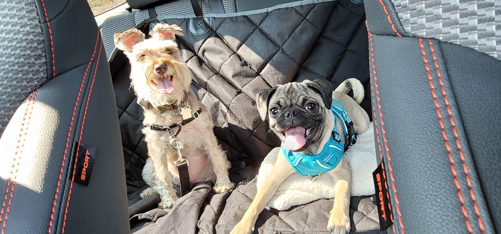

About Me
I'm the coolest Minature Schnauzer ever to have exsisted. I was born in 2012 near Eglin AFB where my dad was going to EOD training. I also went to training. Puppy training that is. Mom taught me how to sit, stay, lay, and play dead by the time I turned 8 months old. That's about the same time dad finished his training too and we moved across the country to begin our adventure together as a family. I'm very alert and a protective kind of guy so I took great care of my mom in our new home when dad had to deploy to Afganistan.
My Characteristics
- The color of my coat is brown, gray, and creamy white.
- I have a very loud bark.
- I'm suuuuuper proud of my mustache. I've been growing it for years!
- I HATE TRIMMING MY NAILS
My Little Sis
My parents thought I could use some company of my own kind so we got a Pug and named her Beverly. Boy, she is a piece of work! For starters, she acts like she's never seen a mustache before. Probably because she's a puppy. But that's no excuse to use me as her personal jungle gym. She's crazy! And she looks crazy too. See for yourself...
Click on the link below to learn more about her breed or I can tell you now and save you some time:
- STUBBORN